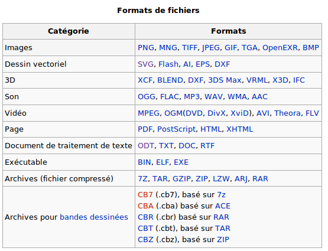

Notions de données numériques
Les données numériques sont des informations codées de manière à pouvoir être stockées et traîtées par un ordinateur.
Le seul langage compréhensible par un ordinateur est le langage binaire composé uniquement de 0 et de 1.
Exemples de données numériques :
un texte, une photo, une vidéo ...
Format des données :
Le format des données correspond à la façon dont celles-ci ont été codées.
Cela permet à l'ordinateur de connaître la manière avec laquelle il doit décoder ces données.
En effet, il est difficile de décoder une succession de 0 et de 1 sans un véritable "mode d'emploi".
De plus, suivant la technique d'encodage utilisée, une même succession de 0 et de 1 ne signifiera pas la même chose.
Ci-dessous quelques exemples de formats :

Cliquer sur le lien suivant pour accéder à la page sur le langage binaire.
Le langage binaire